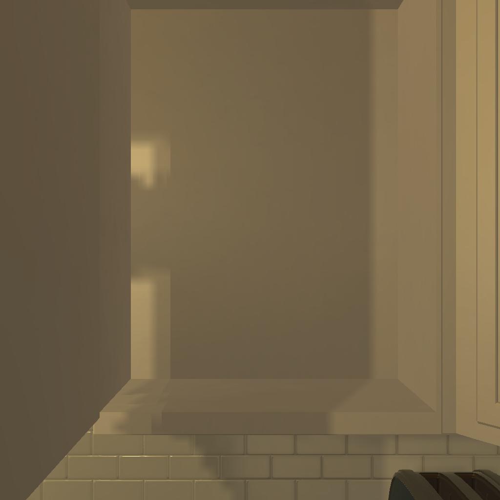

---------------------------------------------------------task: 29---------------------------------------------------------
--------------------------------------------------------------------------------------------------------------------------------------------------------------------
--------------------------------------------------------------------------------------------------------------------------------------------------------------------
Step:--------------------------------------------------------------------------16-------------------------------------------------------------------------------
----------------------------------------
VLM Prompt:
Image1:
**Instruction**
1. Analyze the provided image to identify all visible household objects, focusing on those relevant to the task description "put two tomato in countertop."
2. Use the analysis of the image and the task hint "The agent must find an object of the desired type, pick it up, find the correct location to place it, put it down there, then look for another object of the desired type, pick it up, return to previous location, and put it down there with the other object." to answer the question: what is the most reasonable action in the choices for the task description "put two tomato in countertop"?
4. Decide and write the answer using the template: The answer is: (i): , where i is the real number. If there is no desired object in the image, search every place based on **Initial Observation** to find the object. And if no one is exactly correct, choose a similar answer.
**Initial Observation**
You are in the middle of a room. Looking quickly around you, you can see cabinet (1-20), toaster (1), microwave (1), garbagecan (1), countertop (1-2), drawer (1-4), stoveburner (1-4), sinkbasin (1), sink (1), fridge (1), diningtable (1), coffeemachine (1)
**Answer Choices**
(1): go to cabinet 2
(2): go to cabinet 3
(3): go to toaster 1
(4): go to cabinet 4
(5): go to cabinet 5
(6): go to microwave 1
(7): go to garbagecan 1
(8): go to countertop 1
(9): go to drawer 1
(10): go to cabinet 6
(11): go to cabinet 7
(12): go to drawer 2
(13): go to stoveburner 1
(14): go to stoveburner 2
(15): go to countertop 2
(16): go to cabinet 8
(17): go to cabinet 9
(18): go to cabinet 10
(19): go to drawer 3
(20): go to drawer 4
(21): go to stoveburner 3
(22): go to stoveburner 4
(23): go to cabinet 11
(24): go to cabinet 12
(25): go to cabinet 13
(26): go to cabinet 14
(27): go to sinkbasin 1
(28): go to sink 1
(29): go to cabinet 15
(30): go to fridge 1
(31): go to cabinet 16
(32): go to cabinet 17
(33): go to cabinet 18
(34): go to cabinet 19
(35): go to diningtable 1
(36): go to coffeemachine 1
(37): go to cabinet 20
(38): close cabinet 1
(39): take nothing from cabinet 1
(40): examine cabinet 1
**Answer**
Let's think step by step by following the instructions.
----------------------------------------
----------------------------------------
Original Response:
The task is to put two tomatoes on the countertop. From the image provided, we can see a countertop (presumably countertop 1) and part of a cabinet. There are no tomatoes visible in the image. According to the initial observation, there are multiple cabinets, drawers, and a fridge where tomatoes might be stored.
The most reasonable action from the choices given would be to start searching for the tomatoes in the locations where they are most likely to be found, such as the fridge or cabinets where food is typically stored.
Since the image shows a countertop and part of a cabinet, it's reasonable to assume that the agent is already near the countertop and one of the cabinets. Therefore, the agent should first search the nearby cabinets before moving on to other locations.
(8): go to countertop 1 is not correct because the agent is already at the countertop, and there are no tomatoes there.
(30): go to fridge 1 is a reasonable choice because tomatoes are often stored in the fridge.
(1) to (37) are actions to go to various cabinets, drawers, and appliances, but they do not specify searching for tomatoes.
(38) to (40) are actions related to cabinet 1, which we cannot see inside of in the image, so we don't know if there are tomatoes there.
Based on these considerations, the most reasonable action would be to check the fridge first for tomatoes. Therefore, the answer is:
The answer is: (30): go to fridge 1
----------------------------------------
----------------------------------------
>>> Refine Original VLM Response and Get Pure Action: go to fridge 1
----------------------------------------
-----------------------------------------------------------------
Running time: 10.513501644134521 seconds
Total Money: 10.55913
-----------------------------------------------------------------
-----------------------------------------------------------------
Text Observation:You arrive at loc 30. The fridge 1 is open. On the fridge 1, you see a mug 1, a potato 1, and a egg 1.
-----------------------------------------------------------------
UNSUCCEED